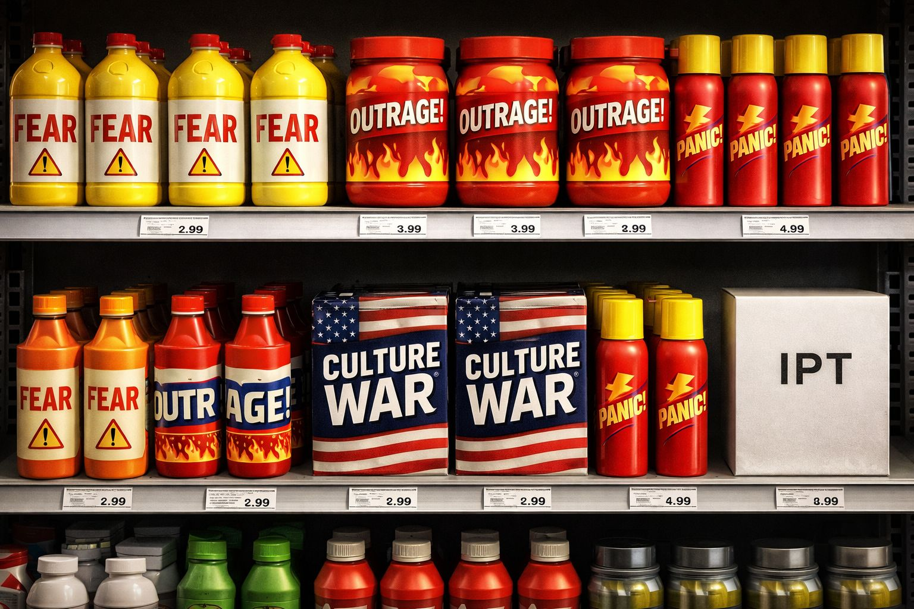

Modern media systems compete for attention. Attention is easiest to capture when emotions are strong.
Fear, outrage, and perceived threats travel faster than calm discussion.
As a result, many information systems unintentionally reward content that activates identity panic.
When identity panic spreads, audiences become more reactive, more loyal to in-groups, and less patient with nuance.
This creates a powerful feedback loop.
Messages that trigger identity panic often follow a recognizable structure:
1. Signal a Threat
Suggest that a group, tradition, or way of life is under attack.
2. Simplify the Conflict
Frame complex situations as a struggle between “us” and “them.”
3. Amplify Urgency
Present the issue as immediate, existential, or irreversible.
4. Offer a Target
Identify someone or something to blame.
5. Reward Loyalty
Encourage stronger group identity as protection.
This pattern spreads rapidly because it activates ancient survival instincts.
Identity panic messaging often revolves around narratives such as:
These narratives create emotional intensity that spreads quickly through social networks.
Human beings evolved to respond quickly to danger signals.
When threats appear, the brain prioritizes protection over reflection.
This means:
Under these conditions, simple stories become extremely persuasive.
The Identity Panic Toolkit helps people slow down and regain perspective when these dynamics appear.
Instead of reacting automatically, IPT encourages people to ask:
These questions help restore calm thinking.
The goal of IPT is not to erase identity or disagreement.
The goal is to prevent panic from controlling perception.
When people can recognize manipulation tactics, they regain the freedom to think clearly and respond with dignity.
The Identity Panic Toolkit is open and free.
Anyone may share, adapt, expand, or teach these ideas.
No membership required.
Carry the signal forward.